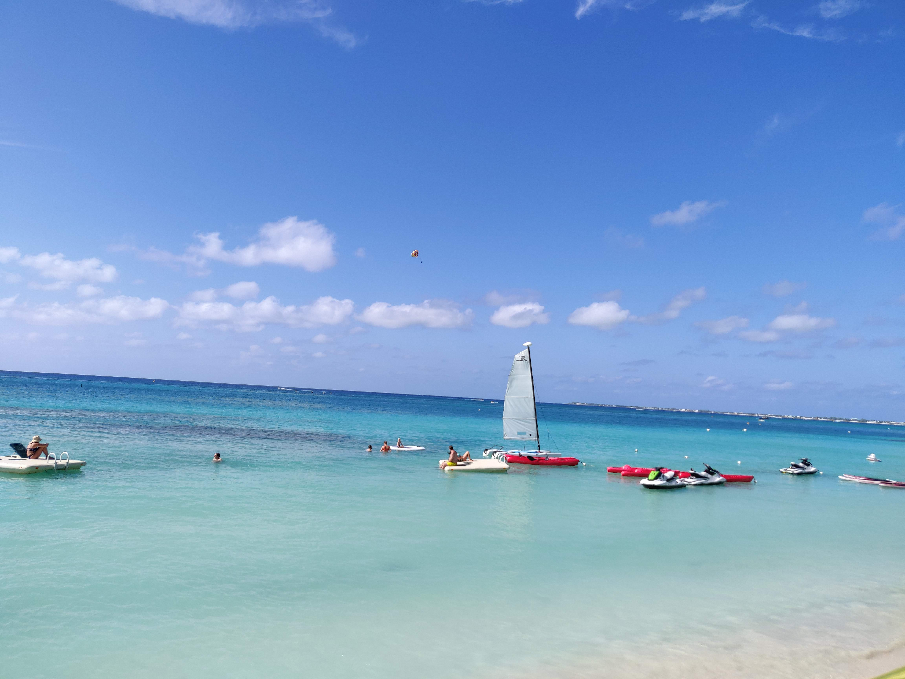
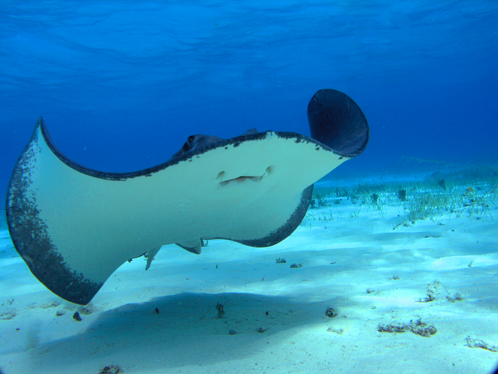
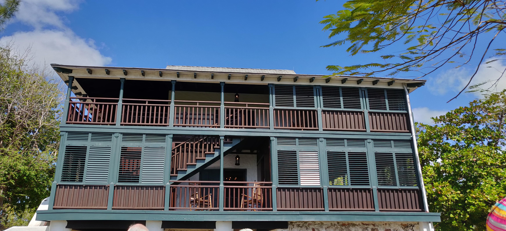
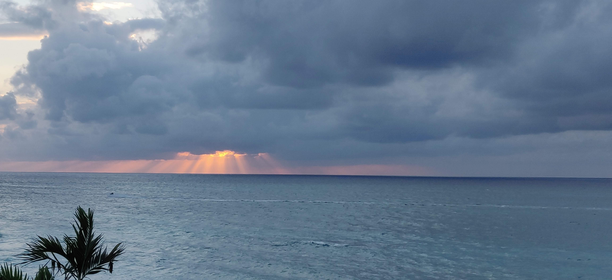
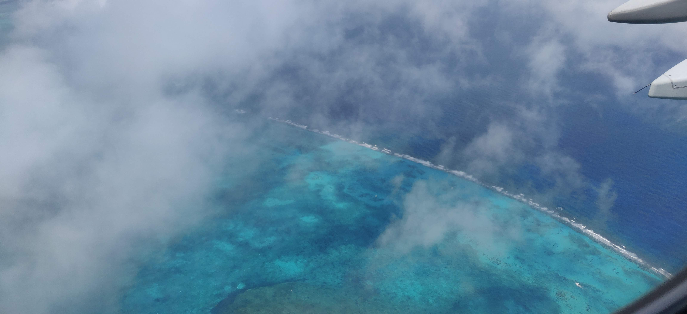

Cayman Islands - One of the lesser known Caribbean Islands. So why did we choose this ? Read along to know ..
Not many people would know about Cayman Islands. It is mostly known to people as a tax haven of the rich. Where does it lie geographically, you ask ?
It lies in the Caribbean sea next to the island of Jamaica, nestled below Cuba and close to the tip of Mexico. It is in the shape of a whale and not that big in size compared to other Caribbean islands in the region.
JetBlue is the dominant airline carrier for the Caribbean from the West Coast as far as we saw. After a gruelling 10h flight, we landed in Owen Roberts International Airport(GCM), George Town, Cayman Islands. We were welcomed by a pleasant sunny weather. It is a small cozy airport. The immigration line was not too bad. The Officer greeted us with a warm smile just like the place. He asked us our Visas, purpose of visit and duration of stay. We were two honeymooners who went to Grand Cayman Islands from USA with Indian passports. Note that a person with Indian passport with valid US Visa can travel to Cayman Islands without a need to apply for a Travel Visa. We had thoroughly done a research of the safety warnings, Zika virus and Visa requirements of almost all Caribbean Islands before booking. Grand Cayman came at the top of the list in all respects. It is noteworthy to mention that the Cayman Immigration Office responded to our email about the Visa requirements within a couple of days. The official confirmation that we got from them made us confident to travel to the less travelled UK-overseas territory in the Caribbean sea.
The reason to write this blog is that there are not many resources about Cayman on the internet if you want to do some exploring on your own. Of course the resorts will help with the tours and bookings if required but that leaves us little chance to book in advance, personalize according to your likes and may end up not getting any tickets during peak season like we did. It is one of those trips that we went barely planned and prepared since we were busy with wedding and its preparations for months before it. That gave us a good excuse to learn about various interesting things in the island from the locals. The Caymanians are friendly and don’t hesitate to tell about the culture and heritage about the land.

Grand Cayman Island is mostly divided into West Bay where the Seven mile beach is and the East end bay. The West Bay is more crowded with cruise ships and the resorts mostly along the Seven-mile beach. The East end has Rum Point and Cayman Kai. The island is small enough that can take a maximum of 1hour to reach the farthest end by car. If you plan to go to the East end of the island for any reason, you are better off renting a car because the bus service is not so frequent there.
Things to note :
-
Money/Transactions: All the places are USD friendly. US Dollars and/or Travel Rewards Credit Card should work in almost all places. They display prices both in Caymanian Dollars as well as in US Dollars. Keep good amount of US Dollar bills(of all ranges from 1$,5$,20$) for tips, taxi and bus if you are going on your own
- Commute:
- Taxi/Rideshare : Uber/Lyft don’t work in Cayman. There are taxis everywhere but a bit expensive compared to the public buses. Interesting thing is that, all the shops, hotels will have a taxi call number on their speed dial. We need to request them to call a taxi for us or we need to tell the taxi driver to come back and pick us up after a specific period of time.
- Public Bus: The island is well connected with public buses going to almost all the major tourist spots. Some places like the Rum Point which is on the far east side of the island has buses but less frequent. The buses also work very similar to taxis where we need to request the shop vendors to call the bus service. The bus drivers don’t mind making a detour for a rider. And mind you, we can wave at the bus from anywhere and the bus driver will somehow make sure we get into the bus.
- Language: English works well at all places
- Good time to visit: Cayman islands offer warm weather almost all through the year. Mostly from November and April, the temperatures are between 70-85F. Nights don’t get too chilly either. Bookings: Book everything well in advance especially during peak season.
-
Visa Requirements: A person with valid US Visa doesn’t require a visa to enter Cayman. More information with the list of countries could be found on their website : Link to Visa details
- Recommended Activities:
- Walk the Seven-Mile Beach (which is actually 5.5miles). The fine grains of sand with the crystal clear blue water waves rushing to the shore will blow your mind
- Bio-luminescence tour: It is a night kayaking tour where the guide takes you deep into the ocean to see the phytoplanktons lighting the water as you row your kayak. The fluorescent color gets brighter as you go deeper. The sky above has thousands of stars twinkling in the dark sky. These micro creatures are emitting light as a defence mechanism. Light light everywhere in the dark ! Right out of ‘Life of Pi’. The tour starts in the Rum point which is 1hr drive from the seven-mile beach where most of the resorts are located. You will also get to see some jelly fish which our tour guide caught one to show. The night was not cold at all. The cool water splashing you from the kayaking was welcoming.
- Stingray city tour: We had booked a tour from Captain Marvin’s who boast themselves to be the Pioneer of Stingray. Their van picked us up from our hotel and dropped us to their store where we we re checked in. The store has some really good souvenirs. Then they took us in the bus again to the spot where the boats were stationed alongside the mangroves. The boat crew was extremely friendly and cracked jokes all through. They took us deep into the ocean for about 45mins and there was this shallow part of ocean where we could see some boats already stopped and some people standing in the water but no signs of Stingrays from our boat where we stopped. As and when we stepped into the water, we were asked not to panic when a sting ray glides in the water near our feet and not to step on its long tail where it stings if it senses any kind of provocation. Still no signs of Stingray. One of our boat crew member dove inside and came back with a large sting ray now. It seemed to rest on his arms calmly like any other pet. They showed some tricks w h ere the stingray kissed him and rode on his back. And we were told that we could do the same and each one of us will get to do it in turns. That sounds crazy isnt it ? Well, We held the Sting ray like a pizza box in our hands as instructed. It kissed and hugged us. It was all too slimy and soft. We also got to feed it some squids that the crew carried. It is said that Caymanians believe that the Sting ray kiss brings you luck for 7 years. 
- Snorkelling tour at the coral: The same Captain Marvin’s tour had a stop at a coral reef for us to snorkel. It is just beautiful underneath the water. It was our first time at snorkeling and we were the inexperienced lot in the crowd. It is breath-taking, quite literally. Haha :) It takes some practice to get used to the snorkeling gear. But I would highly recommend snorkeling once in a lifetime in such beautiful waters.
-
Cayman tour : We did our own exploring of the island, which was in one way good that we got our freedom and time for adventure. It was a bit reckless on our part to go on our own because we are forced to use the public transport for our commute and it was not always timely. There was wait time before the next bus would come and we could not cover a few places as we planned.
- St. Pedro’s Castle: the first thing they tell you here is that St.Pedro is not someone’s name. It is the name of the place itself. They have an interesting film experience to begin with. It is interesting because you can not only listen and see the history of the place but we get to see the extra effects of the rains and thunders and the winds. Overall a nice getaway if you like to know some history. 
- Blow holes: Although we didn’t get to see this place as the waves were not fierce at the time, it is a highly recommended place by the locals when the sea is at its maximum ferocity. The waves hitting the rocks look like there is an explosion of sea water from within.
- Botanical Garden: Another recommended tour for mostly who like Botanical Science. They have grown trees from all over the world in this place with some occasional sightings of Iguanas. You should be lucky to sight a blue one though. Sting Ray luck hadnt taken its effect on us yet.

-
Smith’s Cove: A nice picnic spot far from the Seven Mile Beach where you can relax or snorkel or just swim around in the warm beach

- Hell: I think it is a bit hyped. This place, from it’s pictures, looks like a small secluded area with some black limestone protrusions from the ground. We decided not to visit this place but instead to go to better places.
- Rum’s point: It is a fun and happening place in the day and they have tours for bioluminenscence in the night. But make sure you have a sound plan to get to and from this place since its on the other end of the island with less access to public transport.
- Cayman Gifts and Souvenirs: This is the most fun part of any of our trip which I look forward to. What to take home ? This place was a jackpot. It had everything you can ever imagine of a Caribbean Islands souvenir item starting from the normal magnets, key chain and coasters to some really cool artsy items with a Cayman/Caribbean theme. Oh yeah, we got the Pirate themed souvenirs there.
One of the best sunrise and sunset I have witnessed. We had a sea facing hotel room from which we could see the morning sun rising when people start bustling on the shore. It was one of a sight to watch from the comfort of your room.

When it was time to bid goodbye, we caught a last glimpse of the blue ocean beneath us from the flight.

Before I bid adieu, listen to this old melodious and a meaningful Bollywood song to remind us that we are all just travelers in the journey called life. “Musafir hoon yaaron”